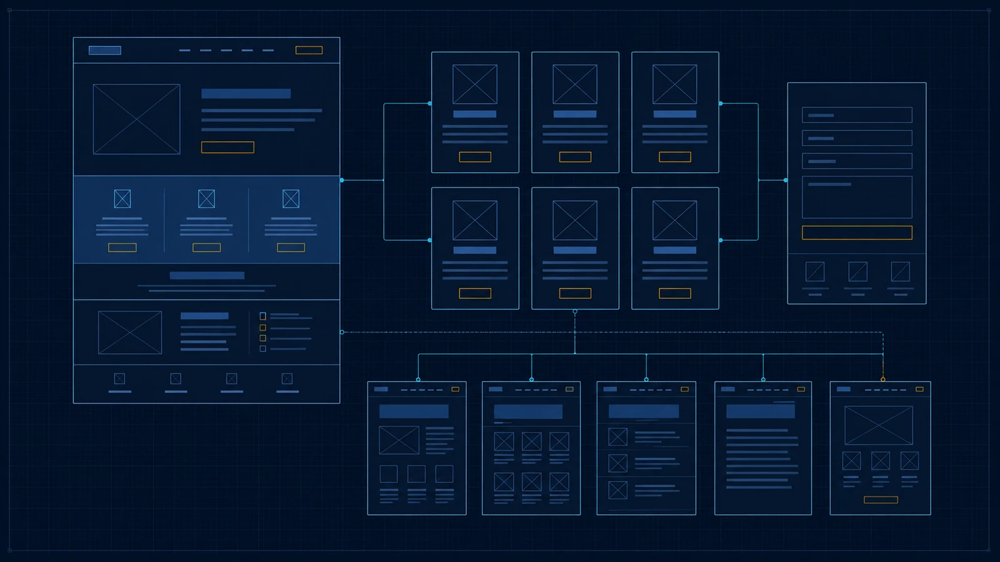

Mobile inadequado
Texto cortado, grids comprimidos, botões pequenos e navegação dependente de hover.
Reformulação de sites
A Carthage audita conteúdo, navegação, responsividade, identidade e desempenho antes de reconstruir a experiência.
Sinais de desgaste
Texto cortado, grids comprimidos, botões pequenos e navegação dependente de hover.
Informações importantes acumuladas, caminhos duplicados ou ausência de hierarquia.
Cores, tipografia e componentes mudam sem propósito entre seções.
O visitante entende parte do conteúdo, mas não sabe qual ação deve seguir.
Cards genéricos substituem explicações que justificariam páginas próprias.
Scripts duplicados, links quebrados, imagens pesadas ou configuração espalhada.
Estrutura real do caso publicado
À esquerda, uma simulação didática do projeto aberto no navegador antes do carregamento completo do acabamento visual. À direita, a interface real publicada para Dárcio Eloi Advocacia. A comparação não inventa um “site antigo”: ela torna visível a diferença entre estrutura funcional e experiência final.
 Interface real publicada · depois
Interface real publicada · depois

Auditoria responsável
Dúvidas
Não. A primeira etapa identifica o que funciona, o que pode ser reaproveitado e o que limita conteúdo, desempenho, edição ou responsividade. Domínio, textos, dados e ativos úteis podem ser preservados.
A reconstrução é indicada quando remendos adicionais custariam mais, perpetuariam problemas ou impediriam uma arquitetura coerente.
URLs relevantes, títulos, metadados, páginas indexadas e conteúdos com valor são inventariados antes da troca. Quando uma rota precisa mudar, o plano de publicação deve prever redirecionamento e atualização do sitemap.
A migração não promete manter posições de busca, mas reduz perdas evitáveis e deixa as mudanças documentadas.
Sim, quando a infraestrutura permite isolar prioridades sem criar duas experiências contraditórias. A ordem pode começar por páginas de maior tráfego, contato ou problema técnico.
O plano precisa registrar dependências compartilhadas — cabeçalho, estilos, formulários, analytics e consentimento — para evitar retrabalho.
Antes do projeto são definidos critérios técnicos e de experiência: navegação, leitura mobile, integridade de links, clareza de conteúdo, acessibilidade e desempenho.
Métricas comerciais exigem período de comparação e dados confiáveis. Elas não devem ser inventadas nem atribuídas apenas ao novo layout.